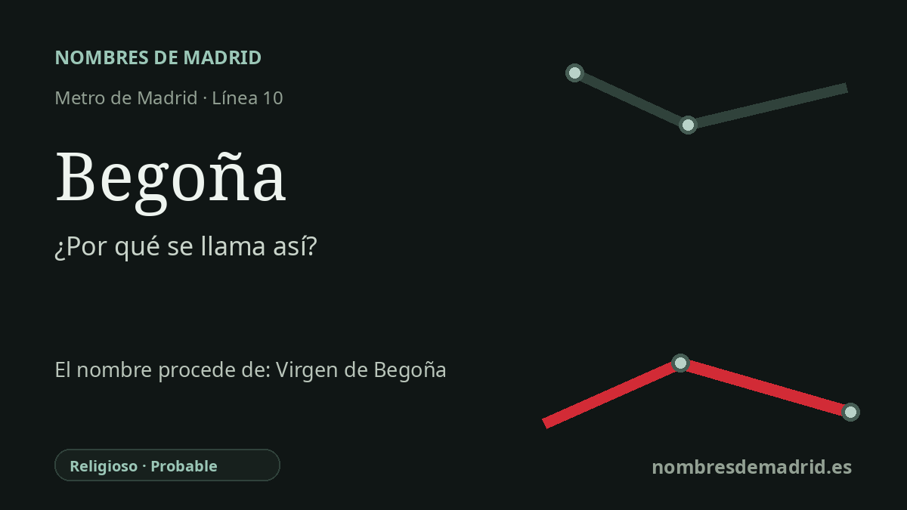

Publicado el · Investigación de Nombres de Madrid · Cómo verificamos cada origen · 9 fuentes consultadas
Respuesta rápida
La estación de Begoña toma su nombre del cercano núcleo residencial de Virgen de Begoña, en el norte de Madrid. Ese nombre local remite en última instancia a Nuestra Señora de Begoña, advocación mariana vinculada al santuario bilbaíno y patrona de Bilbao y Bizkaia.
La historia del nombre
La estación de Metro llamada Begoña toma su nombre de su entorno inmediato: el ámbito residencial de Virgen de Begoña, junto al extremo norte del paseo de la Castellana y cerca del complejo hospitalario de La Paz. La información actual del CRTM sitúa Begoña en la línea 10 y recoge accesos por Ciudad Sanitaria La Paz y por San Modesto, lo que encaja con su posición entre el lado hospitalario y el lado del barrio de Begoña.
El origen más profundo del nombre es religioso. Nuestra Señora de Begoña es la advocación mariana asociada al santuario situado en las alturas de Bilbao. El propio santuario presenta a la Virgen de Begoña como patrona de Bilbao y Bizkaia, y en Bizkaia la devoción se conoce popularmente como la Amatxu, 'la madre'. Por tanto, el nombre de la estación traslada a Madrid una denominación devocional bilbaína y vizcaína a través de un topónimo local.
El topónimo madrileño pertenece a la historia de la vivienda pública de posguerra. Fuentes municipales y arquitectónicas identifican la zona como Poblado de Absorción o Unidad Vecinal de Absorción Virgen de Begoña, proyectada desde 1957 y construida durante los años siguientes por organismos públicos de vivienda. Las fuentes del Ayuntamiento la describen dentro de las operaciones de realojo y emergencia de Madrid, como una actuación periférica densa situada en un emplazamiento difícil entre grandes vías, ferrocarril, hospitales y áreas industriales.
Ese contexto es importante porque matiza una lectura puramente devocional. Begoña no es solo el nombre de una imagen mariana colocado en un plano de Metro; es también el nombre de un barrio concreto de mediados del siglo XX, marcado por el crecimiento acelerado de Madrid y por las políticas de vivienda empleadas para absorber presión demográfica. El cercano Hospital La Paz abrió en 1964 y acabó convertido en uno de los grandes complejos hospitalarios madrileños, de modo que la estación sirve hoy tanto a una memoria residencial de los años cincuenta y sesenta como a un gran paisaje sanitario.
Begoña es con seguridad un topónimo antes de ser nombre personal o nombre de estación, pero su etimología lingüística está discutida. Una guía onomástica moderna señala que la segmentación popular bego oina, a menudo glosada como una frase relacionada con estar 'a los pies', carece de base para Euskaltzaindia; también recoge la opinión de Patxi Salaberri de que muchos topónimos acabados en -oña pueden proceder de nombres de persona. Para la estación, por tanto, la evidencia más sólida es el barrio madrileño y la advocación mariana, no un significado literal vasco preciso.